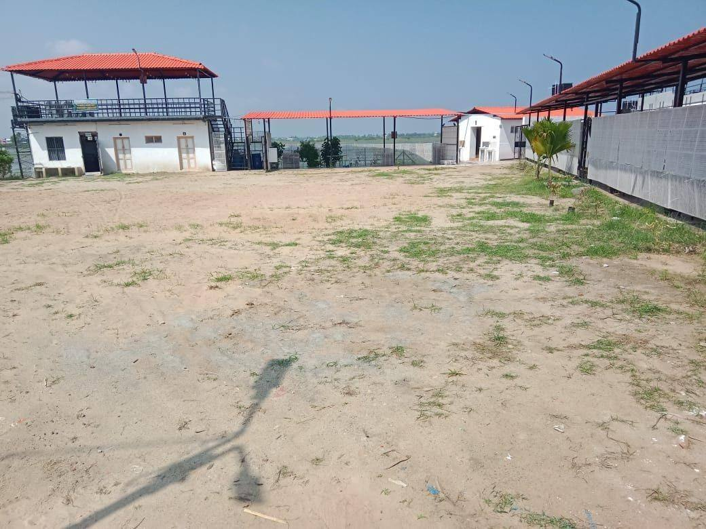

Small party venue Karaikal
The Deck - 50 pax event space at Marina Lawn Karaikal
The Deck is suitable for small party venue Karaikal searches, birthday parties, family functions, meetings and intimate celebrations.

Best for compact celebrations
The Deck is the smaller event space inside Marina Lawn with around 50 pax capacity. It is ideal for birthday parties, surprise events, private parties, meetings and small family gatherings in Karaikal.
- 50 pax capacity
- Rooftop / deck style ambience
- Food Street access nearby
- Good for small outdoor gathering space Karaikal
Deck moments
The Deck event videos
A compact celebration space with neat seating, premium ambience and a warm event feel.